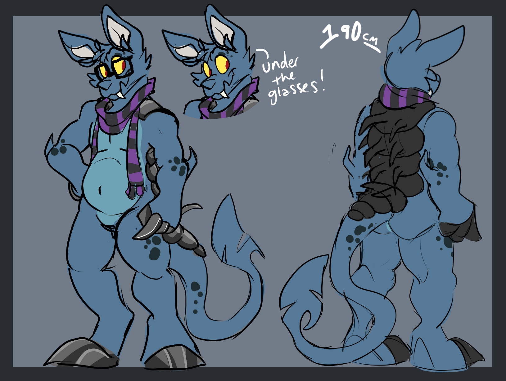
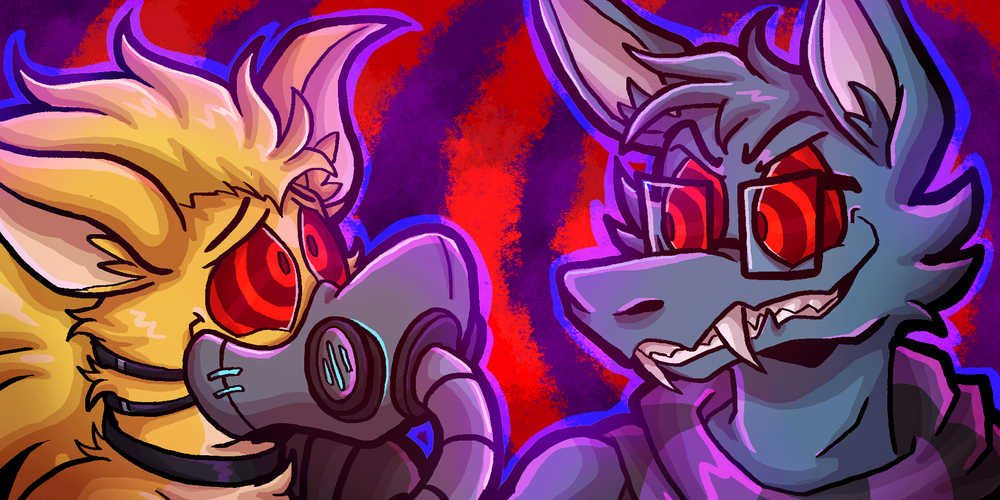

Note: This is a reference page for Tenko. Click Tenko's name above to go there!
PREFACE
Tenko is a Darigan Bori from Neopets, the virtual pet website.
Darigan is his color, and
Bori is his species. They are definitely not a wolf or bat, they are more like like an armadillo! If you scroll all the way down, I also have a
FAQ.
SECTION 2, FULL ANTHRO TENKO
Used as a reference to make a Tenko fursuit. I like this form when I need to be big and mean. 190cm.


Credits: Cirkus, beezlejuice
SECTION 3, FERAL TENKO
This is what Tenko actually looks like on Neopets.com [DTI link] so I like this form when I'm interacting with other feral
Neopets or just want to be extra small. 40cm.

 Credits: Cirkus, WEBPARTEEZ
Credits: Cirkus, WEBPARTEEZ
F.A.Q.
THE NOSE
Here's another look at Tenko's face, markings, and nose from the front:
 Credit: chammuco
Credit: chammuco
It's a little nub! However, Deleon Fursuits did something cool to Tenko's design when translating him into 3D with this prominent, toony nose:

Which inspired my 3D design here!:
 Credit: Colorbars
Credit: Colorbars
In short, Bori nose is shaped however your want it to be! Just know that the nose is a darker blue if you are making it extra toony!
MARKINGS
Note Tenko face markings! Tenko has two dark patches of fur around their eyes. Tenko also has three oval-shaped markings to the right of his right eye!
GLASSES PREFERENCE
Chibi Tenko: Yes usually!
Full Anthro Tenko: Sometimes!
Feral Tenko: Not really!